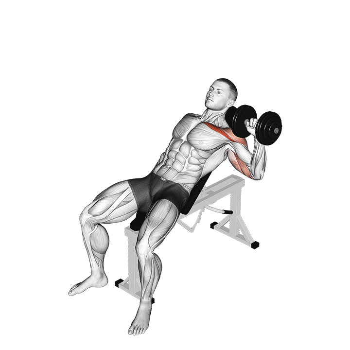

1. Press inclinado
Primer press del día, útil para pecho superior y hombro anterior.
Técnica clave: inclinación moderada, recorrido controlado y estabilidad escapular.
Tip: no conviertas el gesto en un press de hombro puro por exceso de inclinación.
Error común: perder tensión abajo o acortar demasiado el recorrido.
Registro
Sin registro guardado todavía.